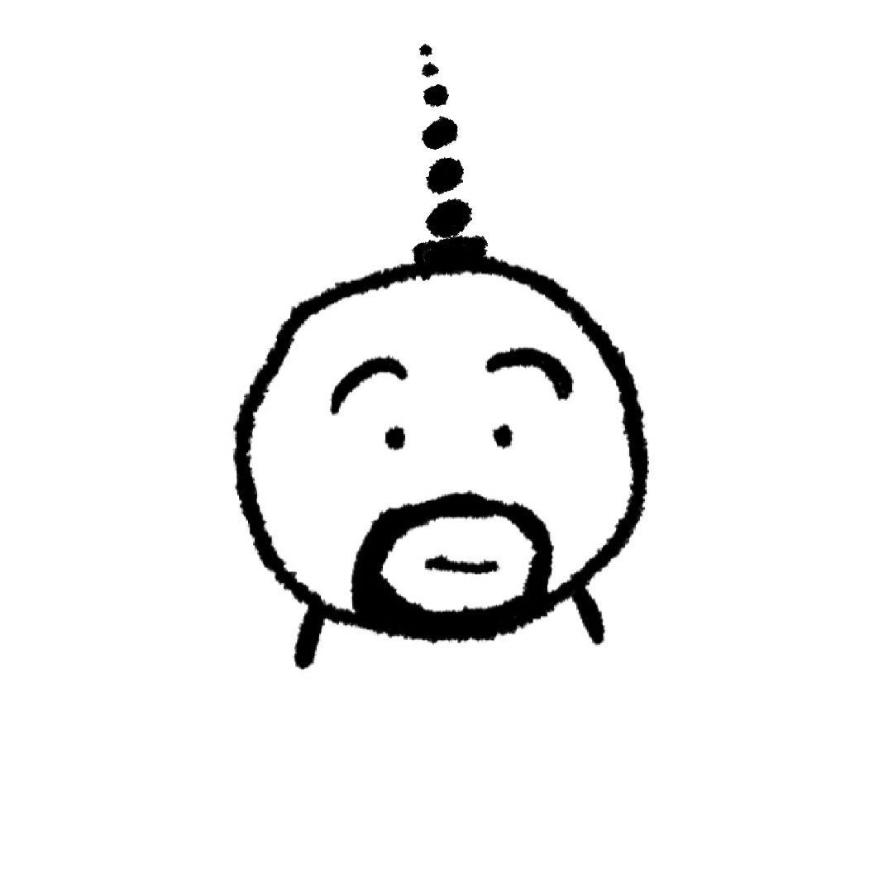

<!-- 
   描述：Dom  （总的来说就是找对象，然后操作对象）
   Dom全称:Document Object Model 文档对象模型
   概述：js通过dom来对html文档进行操作。用来操作web页面的
	注意:会常用到innerHTML，innerTEXT。获取文本和html


   docuemnt文档：就是整个html文档
   object：把页面每一个部分转换成了了一个对象
   model：使用模型表示对象之间的关系，方便获取对象（）
    heml>body>div>a:类似的关系连接


    node节点：
    文档节点：html文档  
    元素节点：html标签
    属性节点：标签元素属性
    文本节点：文本内容

                            （号码对应的结点类型）      值（如id=123）123就是value
    节点的属性：     nodeName       nodeType    node Value
    文档节点        #document           9         null 
    元素节点          标签名            1         null
    属性节点          属性名            2         属性值
    文本节点          #text             3        文本内容


  


    描述：绑定事件方式：
    概述：文档或浏览器之间发生的一些事件。

    绑定事件方式一：
    <button id="nihao" onclick="console.log('nihao')">我是你</button>
    绑定事件方式二：
        //单击时间绑定函数，称为单击响应函数，当事件触发的时候执行
        nihao.conclick = function() {
            alert('nihao')
        }
        这里需要注意！
        for(var i=0;i<input;i++){
            input[i].onclick=funciton(){
                aler(i)  //这里的i是最后的值，因为，单机响应函数是在for循环执行完了才执行的
            }
        }


    描述：获取元素节点
    通过docuemnt对象调用
    document.getElementById()：获取一个元素节点对象
    document.getElementsByTagName():通过标签名获取一组元素节点对象  //返回一个类数组。
    document.getElementsByName():通过name属性获取一组元素节点对象   //也是类数组
    document.all   //获取所有元素
    document.getElementsByTagName()  //获取所有元素


    //案例练习获取两个name是gender的元素节点
    <body>
    <input class='ni' name="gender" value="male" type="radio">
    <input class="ni" name="gender" value="female" type="radio">
    <button id="dian">点击</button>
    <script>
        var dian = document.getElementById('dian');
        dian.onclick = function() {
            var male = document.getElementsByName('gender');
            for (var i = 0; i < male.length; i++) {
                alert(male[i].className)   //获取class属性的内容用className不能直接用class
            }

        }
    </script>
    </body>


    //案例练习获取节点，图片切换。
    <style>
        * {
            margin: 0;
            padding: 0;
        }
        #outer {
            height: 400px;
            width: 300px;
            margin: 0 auto;
            background-color: bisque;
            padding: 10px;
            text-align: center;
        }
        img {
            width: 300px;
        }
    </style>
    <body>
        <div id="outer">
            <p style="font-family:cursive;"></p>
            
            <button id="pver">上一张</button>
            <button id="next">下一张</button>
        </div>
        <script>
        //左键
        var pver = document.getElementById('pver');
        //右键
        var next = document.getElementById('next');
        //图片
        var img = document.getElementsByTagName('img')[0];

        var index = 0;
        var imgarr = ['img/1.JPG', 'img/2.JPG', 'img/3.JPG', 'img/4.JPG', 'img/5.JPG']
        var p = document.getElementsByTagName('p')[0];
        p.innerHTML = '共' + imgarr.length + '张，当前' + (index + 1) + '张'

        //左键效果
        pver.onclick = function() {
                index--

                if (index < 0) {
                    index = imgarr.length - 1
                };
                img.src = imgarr[index];
                p.innerHTML = '共' + imgarr.length + '张，当前' + (index + 1) + '张'
            }
            //右键效果
        next.onclick = function() {
            index++
            if (index > imgarr.length - 1) {
                index = 0
            }
            img.src = imgarr[index];
            console.log(imgarr.length)
            p.innerHTML = '共' + imgarr.length + '张，当前' + (index + 1) + '张'
        }
        </script>
    </body>    


    描述：获取元素节点子节点
    .getElementsByTagName() 获取所有后代元素标签   //子节点有三个，两个ul，一个input，这时候我getElementsByTagName('ul'),只会获取ul，这点是和children的区别，children会全部获取
    .childNodes   读：拆哦node              获取当前节点所有子节点,包括元素节点，属性节点，文本节点，空格也会加进去，除了ie8
    .clildren     读：秋准                  获取当前元素所有子元素
    var arr=docuement.getElementsByTagName('*') 获取document所有元素，这里docuemnt可以改
    .firstChild   读：佛儿斯特拆得           获取当前节点第一个子节点
    .lastChild                              获取当前节点最后一个子节点


    //案例练习获取元素节点子节点练习：(注意：涉及到全部子节点就包括空白文本)
    var arr=docuemnt.getElementById('arr'); //要先buid获取到相应的元素
    var add=arr.getElementsByTagName('li');  //获取arr中所有li标签
    var add=arr.childNodes                   //获取arr中所有子节点，       子节点包括空格，ie8不支持这个属性
    var add=arr.children                     //获取arr中所有子元素
    var add=arr.firstChild                   //获取arr中第一个子节点
    var add=arr.lastChild                    //获取arr中最后一个子节点


    描述：获取父节点和兄弟节点
    .parentNode()    表示当前节点的父节点
    .previousSibling 表示当前节点的前一个兄弟节点   //也可能获取空白text
	.previousElementSibling    表示当前节点的前一个兄弟元素   不兼容ie8
    .nextSibling     表示当前节点的后一个兄弟节点


    描述：剩余的几个获取。


    1、获取class三种方法   
    -document.getElementsByClassName('box1')//不支持ie8和以下的浏览器
    -document.querySelector('.css div')//获取一个(更加灵活，跟css中style一样，直接 #div div，div中的div)  注意：要是获取多个，它只会返回第一个元素。不只是class其他都可以
    -document.querySelectorAll('.css div') //获取一组 ，根据css选择器来选择  可以获取一组元素，返回数组！数组。


    说明querySelector('div')和getElementsByTagName('div')有什么区别？

    queryselector是静态获取，第一次获取的数据就是永久的了，不会变了(比如div获取后加了一个颜色),速率慢
    getelementsbytagname是动态获取，div改变后也可以获取，
    <body>
    <ul>
        <li>111</li>
        <li>222</li>
        <li>333</li>
    </ul>
    </body>
    <script>
        var ul = document.querySelector('ul');
        var list = ul.querySelectorAll('li');
        ul.innerHTML += '<li>4444</li>'
        console.log(list.length) //输出的结果仍然是3，不是此时li的数量6
    </script>


    2.获取body标签两种方法
    var body=document.getElementsByTagName('body')
    var body=document.body;

    3.获取html标签
    var html=document.documentElement;


    4.获取页面所有的元素两种方法
    var all=document.all
    var all=docuemnt.getElementsByTagName('*')//所有元素和all一样


    描述:增删改查dom
    注意：innerHTML也可添加节点！，和下面添加方法区别就是，innerHTML添加一个节点
    影响的是整个ul全部更新，ul中加一个li，+='<li></li>',这里影响是整个ul都会更新。动静太大
    而下面的方法不会影响整个ul，只是更新自己的li


    appendChild  读：饿喷得拆哦得      添加到指定节点                                           
    removeChild  读：瑞幕府拆哦得      删除子节点                                               父节点.removechild(删除的节点)
    replaceChild 读：瑞配斯拆哦得      替换子节点                                               父节点.replavechild(新节点，旧节点)
    insertBefore 读：in斯儿特比佛儿    指定子节点前面插入新的子节点                               父节点.insertBefore(新节点，旧节点) 
    setAttributeNode  添加属性添加到到节点                                                      属性.setattributenode(节点)

  
    注意：这几个节点大部分都需要添加到元素节点中一块使用
    createAttribute() 创建属性节点    var attr=document.createAttribute('class') attr.value='aa'  div.setAttributeNode(attr)
    
    
    createTextNode()  创建本文节点    var text=docuemnt.createTextNode('广州')//根据括号文本创建并返回给text
    
 
    createElement()   创建元素节点    var li =docuemnt.createAttribute('li')//根据括号元素创建并返回值给li
     
 


    描述:dom中修改和查询css的样式
    概述：修改和查询都要用驼峰式命名法操作，如backgroundColor;


    修改一种方式：
    元素.style.backgroundColor='red'     //这种方法修改的是HTML内联代码的样式，不会影响sytle标签中内容。优点是这样有较高的优先级会立即执行。 
     
    案例：注意 加!important不会修改成功，因为已经提高优先级
    <sytle>div{width:100px !important;height:100px};</style>
    <body><div></div></body>
    <script>
        var div=docuemnt.getElementsByTagName('div')[0];
        div.sytle.width=200px    
    </sctipt>


    查询三种方式：
    元素.style.width                     //查询的是body中的内联式css样式，不是sytle标签中的。
    元素.currentStyle                    //查询正在执行的css样式，style标签和内联都查得到， 缺点：ie8以下支持        注意：如width没有设置，显示auto
    getComputedStyle(元素，伪元素).width //查询正在执行的css样式，sytle标签和内联都查得到,   缺点：ie8以上支持       注意：如width没有设置，在页面中有多大就显示多达数值


    currentStyle和getComputedStyle查询方式的兼容问题的解决？
    //加window：判断当前版本浏览器有没有window全局对象的getcomputedstyle属性，判断的是属性，如不加window就是对象了，判断属性有的话会显示'本地属性'，没有的话显示'undefined'换成布尔值就是false；
    //不加window：判断版本有没有getcomputedstyle对象，没有直接报错，下面不在执行！
    if(window.getComputedStyle){   
        getComputedStyle(元素，null).width
    }else{
        元素.currentStyle.width  
    }
    简单写法
    window.getComputedStyle=?getComputeStyle(div,null).width:div.currentStyle.width


    使用形参函数解决兼容问题时需要注意！
    //使用形参函数，注意为什么是[b]而不是.b 。    .b意思是变量b，获取div中叫b的属性，而[b]是获取div中的实参width。       
    funciton fnn(a,b){
        if(window.getComputedStyle){
            reutrn getComputedStyle(a,null)[b]     
        }else{
            return a.currentStyle[b]
        }


        //简写成：
        return window.getComputedStyle ? getComputedStyle(a, null)[b] : a.currentStyle[b]
    }
    fnn(div,width)


    描述：获取元素的相关长度高度距离(全部不能修改样式)


    描述：查询元素长度高度
    元素.currentStyle.width                 //在ie8以下版本查询style标签中设置的长度宽度
    getComputedStyle(元素,伪元素).width     //在ie8以上查询sytle标签中设置的长度
    元素.clientWidth                        //返回元素可以看见的长度(不包括border)    padding溢出也算  注意:以下所有返回的是数值，不加px
    元素.clientHeight                       //返回元素可以看见的宽度(不包括border)    padding溢出也算
    元素.offsetWidth                        //返回元素可以看见的长度(包括border)      padding溢出也算
    元素.offsetHeight                       //返回元素可以看见的宽度(包括border)      padding溢出也算

    元素.offsetParent                       //返回元素父定位元素(就是带有绝对定位或者相对定位的父元素，如没有就是body)
    元素.offsetLeft                         //返回元素左侧距离父定位元素左侧的距离(没有定位元素就返回到body的距离)
    元素.offsetTop                          //返回元素顶侧距离父定位元素顶侧的距离(没有定位元素就返回到body的距离)


    元素.scrollWidth                        //返回元素看得见的看不见的所有长度
    元素.scrollHeight                       //返回元素看得见的看不见的所有宽度
    元素.scrollLeft                         //返回元素左边缘到整个页面的最最左边的距离（也是滚动条滚动的距离）
    元素.scrollTop                          //返回元素顶部边缘到整个页面的最最顶部的距离（也是滚动条滚动的距离）


    描述：鼠标的坐标


    使用方法：
    首先需要用形参来储存对象 
    div.onmousemove=function(event){     //会把鼠标的对象传入event，event就拥有所有的鼠标信息
        event.clientX               //调用event对象的属性clientwidth
    }


    属性：  
    形参.clientX    //鼠标距离可见的页面左边缘的距离                注意：ie8以下不支持     window.形参.clientX  //兼容所有版本    window解释：ie8不会将实参对象传进形参中，是将事件对象作为属性保存的，ie8以上是将对象作为对象保存的
    形参.clientY    //鼠标距离可见的页面顶边缘的距离                注意：ie8以下不支持     window.形参.clientY  //兼容所有版本
    形参.pageX      //鼠标距离页面看的见得看不见的最最左边的距离     注意：ie8以下不支持
    形参.pageY      //鼠标距离页面看不见的看不见的最最顶部的距离     注意：ie8以下不支持


    以前火狐不支持window.形参.clientx，可以用判断解决兼容性问题。
    if(!event){
        event=window.event      
    };
 -->


<!DOCTYPE html>
<html lang="en">

<head>
    <meta charset="UTF-8">
    <meta http-equiv="X-UA-Compatible" content="IE=edge">
    <meta name="viewport" content="width=device-width, initial-scale=1.0">
    <title>Document</title>
</head>
<style>
    * {
        padding: 0px;
        margin: 0px;
    }
    
    #areadiv {
        width: 200px;
        height: 100px;
        border: 1px black solid;
        position: absolute;
    }
</style>

<body style="height: 1000px;width: 2000px;">

    <div id="areadiv"></div>


    <script>
        //案例获取div中的鼠标坐标
        // var areadiv = document.getElementById('areadiv');
        // var showmag = document.getElementById('showmag');
        // areadiv.onmousemove = function(event) {
        //     event = event || window.event  //兼容性问题
        //     var add = window.event.clientX;
        //     var arr = window.event.clientY;
        //     showmag.innerHTML = '长' + add + '高' + arr;
        // }

        //div跟随鼠标移动
        var areadiv = document.getElementById('areadiv');
        document.onmousemove = function(event) {

            // //首先获取到鼠标的坐标
            // var add = event.clientX;
            // var arr = event.clientY;
            // //获取到div距离页面边缘的距离
            // var vdd = areadiv.offsetLeft;
            // var vrr = areadiv.offsetTop;
            // //计算鼠标距离div边缘的距离
            // var cdd = add - vdd; //左边距
            // var crr = arr - vrr; //上边距


            // var edd = add - cdd;
            // var err = arr - crr;

            // areadiv.style.top = err + 'px';
            // areadiv.style.left = edd + 'px';
            // console.log(arr - crr)

            //鼠标的可见页面距离
            //var add = event.pageX;
            //var arr = event.pageY;
            //元素的左边距离是鼠标的左边距离，元素顶部距离是鼠标的顶部距离
            //当页面滚动时候，鼠标距可见的页面顶部10px，但元素会一直保持距离整个不可见页面的顶部10px；
            //鼠标距离可见页面多少px，元素就会距离不可见页面多少px。
            //areadiv.style.left = add + 'px'
            //areadiv.style.top = arr + 'px'


            //获滚动条距离最上边的距离
            var st = document.documentElement.scrollTop || document.body.scrollTop;
            var sr = document.documentElement.scrollLeft || document.body.scrollLeft;
            console.log(st);

            var add = window.event.clientX;
            var arr = window.event.clientY;
            areadiv.style.top = arr + st + 'px';
            areadiv.style.left = add + sr + 'px'

        }
    </script>
</body>

</html>